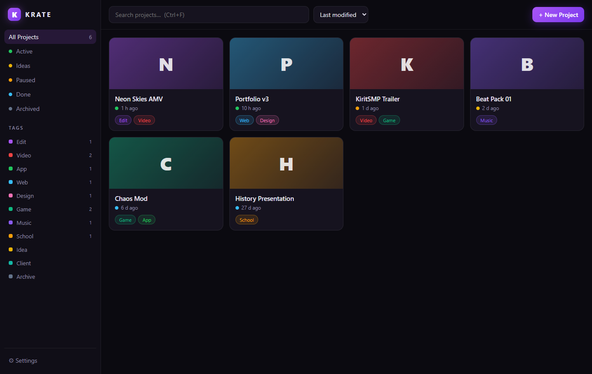
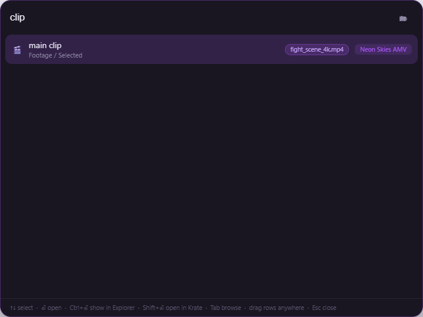
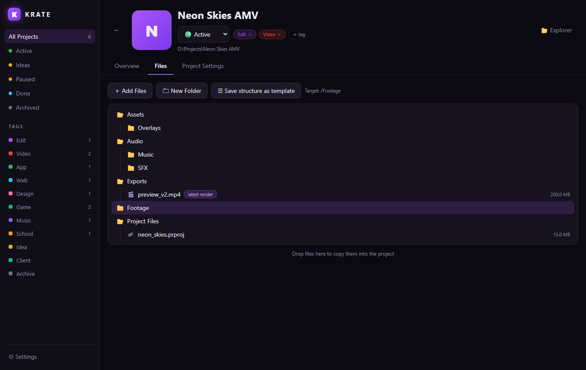

Krate is a local-first project organizer for Windows. Tag your projects, template their folder structure, nickname the files that matter — and pull any of them up from anywhere with one hotkey.

Edits, apps, designs, beats, school stuff — every project is a normal folder on your disk, organized by Krate.
One default projects folder, or any custom location per project. No database — a tiny krate.json rides along in each folder.
Preset tags like Edit, Video, App and Web plus unlimited custom tags with custom colors. Filter by tag or by Idea → Active → Done.
Apply a ready-made structure when creating a project — or save any project's layout as a reusable template.
Call it “main clip”, not render_v7_FINAL2.mp4. Nicknames are searchable and show up as badges everywhere.
Descriptions, timestamped comments and a cover image per project, so your library is scannable at a glance.
One hotkey anywhere in Windows. Search every project, file and nickname at once — fuzzy matching included.
Drop files onto Krate to sort them into a project. Drag results out of the overlay straight into Premiere, Discord or Explorer.
Your files never leave your machine. Uninstall Krate and every folder is exactly where it always was.
Press Ctrl+Alt+K in any app and start typing — project names, file names and your nicknames are all searched at once. Or hit Tab and arrow-key through your folder structure instead.


Krate shows the real folder tree of each project — with nickname badges, quick actions and drag & drop import.
Everything Krate knows about a project lives inside the project folder itself — portable, syncable, yours.
MyProject/ ├─ krate.json ← title, tags, notes, nicknames, status ├─ .krate/ ← cover image └─ …your files, exactly as you put them
Windows 10/11 · free & open source
Prefer building from source? git clone → npm install → npm start